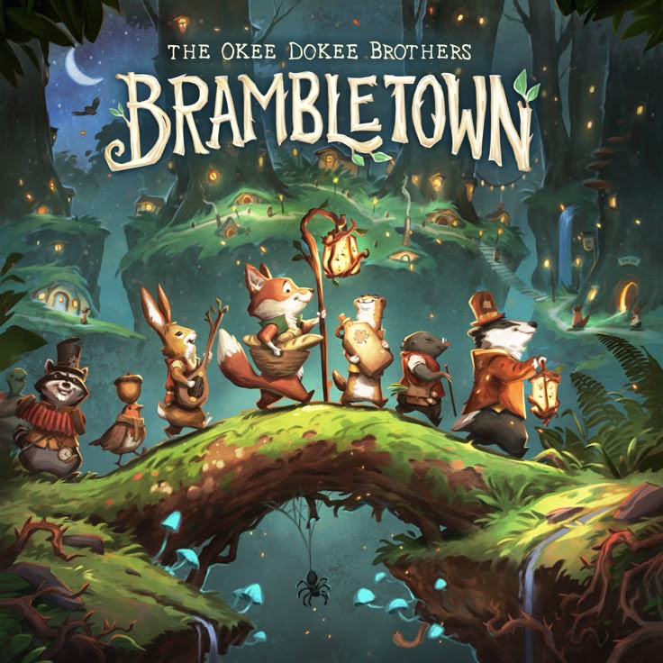

Rp.48.000
Jujutsu Kaisen is an action-fantasy manga set in a world where curses are born from negative human emotions. The story follows Yuji Itadori, a high school student with extraordinary physical abilities who becomes involved in the dangerous world of jujutsu sorcerers after encountering a powerful cursed object. His life changes as he learns to fight curses that threaten humanity. The manga is known for its intense battles, dark atmosphere, and well-developed characters. It explores themes of sacrifice, strength, and the struggle between good and evil, supported by dynamic illustrations and fast-paced storytelling. With its gripping plot and unique power system, Jujutsu Kaisen offers an exciting and immersive reading experience for fans of action and supernatural stories.


Rp.55.000
One Piece is an adventure manga that follows the journey of Monkey D. Luffy, a young pirate with the ability to stretch his body after eating a mysterious Devil Fruit. Dreaming of becoming the Pirate King, Luffy sets out to sea and forms the Straw Hat crew, each member having their own unique abilities and dreams. Set in a vast world of oceans, islands, and powerful enemies, the story is filled with epic battles, heartfelt friendships, humor, and emotional moments. One Piece explores themes of freedom, loyalty, and the pursuit of dreams, supported by rich world-building and memorable characters. With its long-running storyline and imaginative universe, the manga offers an unforgettable adventure for readers of all ages.


Rp.50.000
Detective Conan is a mystery and detective manga that tells the story of a brilliant high school detective who is transformed into a child after a mysterious incident. Despite his appearance, his intelligence and deductive skills remain unmatched. Under the alias Conan Edogawa, he continues solving complex criminal cases while secretly searching for a way to return to his original body. The manga is known for its clever plots, detailed investigations, and logical problem-solving. Each case presents unique clues and twists that challenge readers to think along with the story. With a mix of suspense, drama, and light humor, Detective Conan offers an engaging reading experience and has become one of the most iconic detective manga series of all time.


Rp.55.000
The Promised Neverland is a dark fantasy anime that follows a group of children living in a peaceful orphanage, where life seems happy and secure at first. Behind the warmth and smiles, however, lies a shocking secret that changes everything. Determined to survive, the children use intelligence, strategy, and teamwork to challenge their fate. The story is known for its strong suspense, emotional depth, and clever mind games rather than constant action. With intense plot twists and memorable characters, The Promised Neverland explores themes of freedom, trust, and the strength of human will.

Rp.63.000
Brambletown is a children’s storybook set in a cozy little town full of friendly characters and fun adventures. The story encourages imagination while teaching simple values like kindness, friendship, and courage. Easy to read and enjoyable, Brambletown is perfect for young readers and family reading time.

Rp.63.000
Beyond the Beanstalk is a children’s storybook that invites young readers to explore a magical world beyond a familiar fairytale. The story follows an exciting adventure filled with imagination, curiosity, and bravery, while teaching simple values through fun and engaging characters.

Rp.63.000
The Lost Crown of Cloud Kingdom is a children’s fantasy storybook set in a magical kingdom high above the clouds. The story follows an exciting quest to find a lost crown, filled with adventure, mystery, and imagination. Through brave characters and enchanting settings, the book teaches values such as courage, teamwork, and responsibility while keeping young readers engaged from beginning to end.